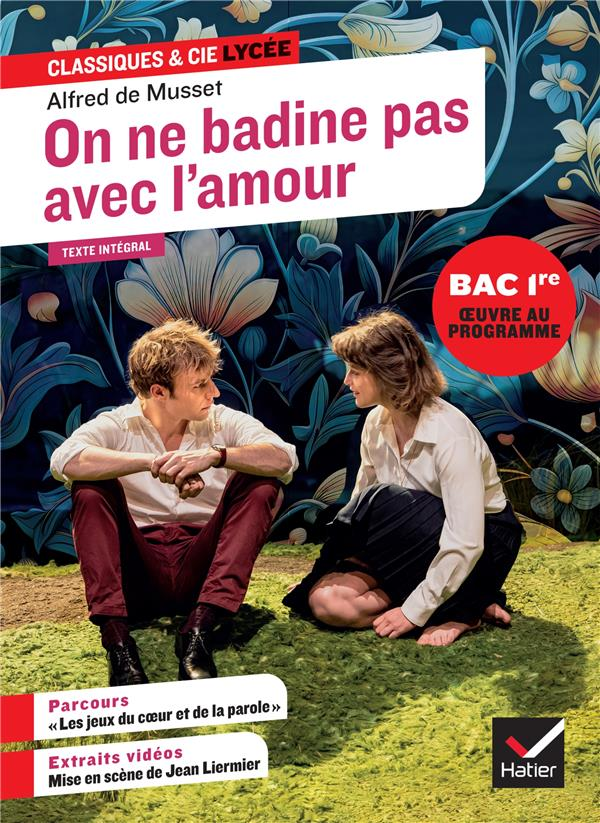

La pièce On ne badine pas avec l’amour a été écrite par Alfred de Musset en 1834. Elle raconte l’histoire de Perdican et Camille, deux jeunes cousins qui s’aiment mais refusent d’avouer leurs véritables sentiments par orgueil et par peur de souffrir. Camille, influencée par l’éducation religieuse qu’elle a reçue au couvent, se méfie de l’amour, tandis que Perdican cherche à la rendre jalouse en séduisant Rosette, une jeune paysanne innocente. Ce jeu amoureux provoque des malentendus et entraîne des conséquences tragiques : Rosette meurt en découvrant qu’elle a été manipulée. À travers cette pièce, Musset montre que l’amour n’est pas un jeu et que l’orgueil, le mensonge et la manipulation peuvent détruire les êtres. L’œuvre mélange ainsi sentiments amoureux, critique sociale et tragédie.